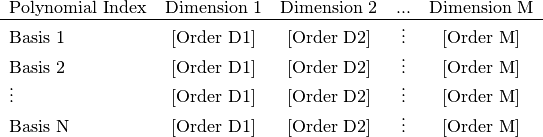

pygpc package¶
Subpackages¶
Submodules¶
pygpc.AbstractModel module¶
-
class
pygpc.AbstractModel.AbstractModel(p, context=None)[source]¶ Bases:
objectAbstract base class for the SimulationWrapper. This base class provides basic functions for serialization/deserialization and printing progress. It cannot be used directly, but a derived class implementing the “simulate” method must be created.
-
print_progress(func_time=None, read_from_file=False)[source]¶ This function prints the progress according to the current context and global_counter.
-
read_previous_results(coords)[source]¶ This functions reads previous results from the hard disk (if present). When reading from the array containing the results, the current grid-index (i_grid) is considered to maintain the order of the results when the SimulationModels are executed in parallel. If the function evaluated the results in parallel internally, i_grid is a range [i_grid_min, i_grid_max].
Parameters: coords (ndarray of float [n_sims x dim]) – Grid coordinates the simulations are conducted with Returns: - None – if no serialized results could be found or does not fit to grid
- list – data at coords
-
simulate(process_id=None)[source]¶ This abstract method must be implemented by the subclass. It should perform the simulation task depending on the input_values provided to the object on instantiation.
Parameters: process_id (int) – A unique identifier; no two processes of the pool will run concurrently with the same identifier
-
validate()[source]¶ This abstract method must be implemented by the subclass. It should perform the validation task depending on the parameters defined in the problem. In cases, the model may not run correctly for some parameter combinations, this function changes the definition of the random parameters and the constants.
-
write_results(data_dict)[source]¶ This function writes the data to a file on hard disk. When writing the data the current grid-index (i_grid) is considered. The data are written to the row corresponding i_grid in order to maintain the order of the results when the SimulationModels are executed in parallel.
Parameters: data_dict (dict of ndarray) – Dictionary, containing the data to write in an .hdf5 file. The keys are the dataset names.
-
pygpc.Algorithm module¶
-
class
pygpc.Algorithm.RegAdaptive(problem, options)[source]¶ Bases:
pygpc.Algorithm.AlgorithmAdaptive regression approach based on leave one out cross validation error estimation
-
run()[source]¶ Runs adaptive gPC algorithm to solve problem.
Returns: - gpc (GPC object instance) – GPC object containing all information i.e., Problem, Model, Grid, Basis, RandomParameter instances
- coeffs (ndarray of float [n_basis x n_out]) – GPC coefficients
- res (ndarray of float [n_grid x n_out]) – Simulation results at n_grid points of the n_out output variables
-
-
class
pygpc.Algorithm.Static(problem, options, grid)[source]¶ Bases:
pygpc.Algorithm.AlgorithmStatic gPC algorithm
-
run()[source]¶ Runs static gPC algorithm to solve problem.
Returns: - gpc (GPC object instance) – GPC object containing all information i.e., Problem, Model, Grid, Basis, RandomParameter instances
- coeffs (ndarray of float [n_basis x n_out]) – GPC coefficients
- res (ndarray of float [n_grid x n_out]) – Simulation results at n_grid points of the n_out output variables
-
pygpc.Basis module¶
-
class
pygpc.Basis.Basis[source]¶ Basis class of gPC
-
b¶ Parameter wise basis function objects used in gPC. Multiplying all elements in a row at location xi = (x1, x2, …, x_dim) yields the global basis function.
Type: list of BasisFunction object instances [n_basis x n_dim]
-
b_gpu¶ ???
Type: ???
-
b_id¶ Unique IDs of global basis functions
Type: list of UUID objects (version 4) [n_basis]
-
b_norm¶ Normalization factor of individual basis functions
Type: ndarray [n_basis x dim]
-
b_norm_basis¶ Normalization factor of global basis functions
Type: ndarray [n_basis x 1]
-
dim¶ Number of variables
-
n_basis¶ Total number of (global) basis function
Type: int
-
extend_basis(b_added)[source]¶ Extend set of basis functions and update gpc matrix (append columns).
Parameters: b_added (2D list of BasisFunction instances [n_b_added x dim]) – Individual BasisFunctions to add
-
init_b_norm()[source]¶ Construct array of scaling factors self.b_norm [n_basis x dim] and self.b_norm_basis [n_basis x 1] to normalize basis functions <psi^2> = int(psi^2*p)dx
-
init_basis_sgpc(problem, order, order_max, order_max_norm, interaction_order)[source]¶ Initializes basis functions for standard gPC.
Parameters: - problem (Problem object) – GPC Problem to analyze
- order ([dim] list of int) – Maximum individual expansion order Generates individual polynomials also if maximum expansion order in order_max is exceeded
- order_max (int) – Maximum global expansion order. The maximum expansion order considers the sum of the orders of combined polynomials together with the chosen norm “order_max_norm”. Typically this norm is 1 such that the maximum order is the sum of all monomial orders.
- order_max_norm (float) – Norm for which the maximum global expansion order is defined [0, 1]. Values < 1 decrease the total number of polynomials in the expansion such that interaction terms are penalized more. This truncation scheme is also referred to “hyperbolic polynomial chaos expansion” such that sum(a_i^q)^1/q <= p, where p is order_max and q is order_max_norm (for more details see eq. (27) in [1]).
- interaction_order (int) – Number of random variables, which can interact with each other All polynomials are ignored, which have an interaction order greater than specified
Notes
[1] Blatman, G., & Sudret, B. (2011). Adaptive sparse polynomial chaos expansion based on least angle regression. Journal of Computational Physics, 230(6), 2345-2367. 
Adds Attributes:
- b: list of BasisFunction object instances [n_basis x n_dim]
- Parameter wise basis function objects used in gPC. Multiplying all elements in a row at location xi = (x1, x2, …, x_dim) yields the global basis function.
-
pygpc.BasisFunction module¶
-
class
pygpc.BasisFunction.BasisFunction(p)[source]¶ Bases:
objectAbstract class of basis functions. This base class provides basic properties and methods for the basis functions. It cannot be used directly, but inherits properties and methods to the specific basis function sub classes.
-
class
pygpc.BasisFunction.Hermite(p)[source]¶ Bases:
pygpc.BasisFunction.BasisFunctionHermite basis function used in the orthogonal gPC to model normal distributed random variables.
-
class
pygpc.BasisFunction.Jacobi(p)[source]¶ Bases:
pygpc.BasisFunction.BasisFunctionJacobi basis function used in the orthogonal gPC to model beta distributed random variables.
-
class
pygpc.BasisFunction.Rect(p)[source]¶ Bases:
pygpc.BasisFunction.BasisFunctionRectangular basis function used in the non-orthogonal gPC.
-
class
pygpc.BasisFunction.SigmoidDown(p)[source]¶ Bases:
pygpc.BasisFunction.BasisFunctionSigmoidDown (from 0 to 1) basis function used in the non-orthogonal gPC.
-
class
pygpc.BasisFunction.SigmoidUp(p)[source]¶ Bases:
pygpc.BasisFunction.BasisFunctionSigmoidUp (from 0 to 1) basis function used in the non-orthogonal gPC.
-
class
pygpc.BasisFunction.StepDown(p)[source]¶ Bases:
pygpc.BasisFunction.BasisFunctionStepDown (from 1 to 0) basis function used in the non-orthogonal gPC.
-
class
pygpc.BasisFunction.StepUp(p)[source]¶ Bases:
pygpc.BasisFunction.BasisFunctionStepUp (from 0 to 1) basis function used in the non-orthogonal gPC.
pygpc.Computation module¶
-
pygpc.Computation.Computation(n_cpu)[source]¶ Helper function to initialize the Computation class. n_cpu = 0 : use this if the model is capable of to evaluate several parameterizations in parallel n_cpu = 1 : the model is called in serial for every paramerization. n_cpu > 1 : A multiprocessing.Pool will be opened and n_cpu parameterizations are calculated in parallel
Parameters: n_cpu (int) – Number of CPU cores to use Returns: obj – Object instance of Computation class Return type: object instance of Computation class
-
class
pygpc.Computation.ComputationFuncPar(n_cpu)[source]¶ Computation sub-class to run the model using a the models internal parallelization
-
run(model, problem, coords, coords_norm=None, i_iter=None, i_subiter=None, fn_results=None, print_func_time=False)[source]¶ Runs model evaluations for parameter combinations specified in coords array
Parameters: - model (Model object) – Model object instance of model to investigate (derived from AbstractModel class, implemented by user)
- problem (Problem class instance) – GPC Problem under investigation, includes the parameters of the model (constant and random)
- coords (ndarray of float [n_sims, n_dim]) – Set of n_sims parameter combinations to run the model with (only the random parameters!).
- coords_norm (ndarray of float [n_sims, n_dim]) – Set of n_sims parameter combinations to run the model with (normalized coordinates [-1, 1].
- i_iter (int) – Index of main-iteration
- i_subiter (int) – Index of sub-iteration
- fn_results (string, optional, default=None) – If provided, model evaluations are saved in fn_results.hdf5 file and gpc object in fn_results.pkl file
- print_func_time (bool) – Print time of single function evaluation
Returns: res – n_sims simulation results of the n_out output quantities of the model under investigation.
Return type: ndarray of float [n_sims x n_out]
-
-
class
pygpc.Computation.ComputationPoolMap(n_cpu)[source]¶ Computation sub-class to run the model using a processing pool for parallelization
-
run(model, problem, coords, coords_norm=None, i_iter=None, i_subiter=None, fn_results=None, print_func_time=False)[source]¶ Runs model evaluations for parameter combinations specified in coords array
Parameters: - model (Model object) – Model object instance of model to investigate (derived from AbstractModel class, implemented by user)
- problem (Problem class instance) – GPC Problem under investigation, includes the parameters of the model (constant and random)
- coords (ndarray of float [n_sims, n_dim]) – Set of n_sims parameter combinations to run the model with (only the random parameters!).
- coords_norm (ndarray of float [n_sims, n_dim]) – Set of n_sims parameter combinations to run the model with (normalized coordinates [-1, 1].
- i_iter (int) – Index of main-iteration
- i_subiter (int) – Index of sub-iteration
- fn_results (string, optional, default=None) – If provided, model evaluations are saved in fn_results.hdf5 file and gpc object in fn_results.pkl file
- print_func_time (bool) – Print time of single function evaluation
Returns: res – n_sims simulation results of the n_out output quantities of the model under investigation.
Return type: ndarray of float [n_sims x n_out]
-
-
pygpc.Computation.compute_cluster(algorithms, nodes, start_scheduler=True)[source]¶ Computes Algorithm instances on compute cluster composed of nodes. The first node is also the dispy-scheduler. Afterwards, the dispy-nodes are started on every node. On every node, screen sessions are started with the names “scheduler” and “node”, where the scheduler and the nodes are residing, respectively. They can be accessed by “screen -rD scheduler” or “screen -rD node” when connected via ssh to the machines.
Parameters: - algorithms (list of Algorithm instances) – Algorithm instances initialized with different gPC problems and/or models
- nodes (str or list of str) – Node names
- start_scheduler (bool) – Starts a scheduler on the first machine in the nodes list or not. Set this to False if a scheduler is already running somewhere on the cluster.
pygpc.EGPC module¶
-
class
pygpc.EGPC.EGPC[source]¶ Bases:
pygpc.GPC.GPC-
get_approximation(coeffs=None, xi=None, output_idx=None)[source]¶ Calculates the gPC approximation in points with output_idx and normalized parameters xi (interval: [-1, 1]).
pce = EGPC.get_approximation(coeffs=None, xi=None, output_idx=None)
Parameters: - coeffs ([N_coeffs x N_out] np.ndarray, optional, default=None) – Gpc coefficients
- xi ([1 x dim] np.ndarray, optional, default=None) – Point in variable space to evaluate local sensitivity in normalized coordinates
- output_idx ([1 x N_out] np.ndarray, optional, default=None) – Index of output quantities to consider (Default: all outputs).
Returns: pce – Gpc approximation at normalized coordinates xi.
Return type: [N_xi x N_out] np.ndarray
-
get_global_sens(coeffs)[source]¶ Determine the global derivative based sensitivity coefficients after Xiu (2009) [1].
global_sens = EGPC.get_global_sens(coeffs)
Parameters: coeffs ([N_coeffs x N_out] np.ndarray) – Gpc coefficients Returns: global_sens – Global derivative based sensitivity coefficients Return type: [dim x N_out] np.ndarray Notes
[1] D. Xiu, Fast Numerical Methods for Stochastic Computations: A Review, Commun. Comput. Phys., 5 (2009), pp. 242-272 eq. (3.14) page 255
-
get_local_sens(coeffs, xi)[source]¶ Determine the local derivative based sensitivity coefficients in the point of interest xi (normalized coordinates [-1, 1]).
local_sens = EGPC.calc_localsens(coeffs, xi)
Parameters: - coeffs ([N_coeffs x N_out] np.ndarray) – Gpc coefficients
- xi ([N_coeffs x N_out] np.ndarray) – Point in variable space to evaluate local sensitivity in (normalized coordinates!)
Returns: local_sens – Local sensitivity
Return type: [dim x N_out] np.ndarray
-
static
get_mean(coeffs)[source]¶ Calculate the expected mean value.
mean = SGPC.get_mean(coeffs)
Parameters: coeffs ([N_coeffs x N_out] np.ndarray) – Gpc coefficients Returns: mean – Expected mean value Return type: [1 x N_out] np.ndarray
-
get_pdf(coeffs, n_samples, output_idx=None)[source]¶ Determine the estimated pdfs of the output quantities
pdf_x, pdf_y = EGPC.get_pdf(coeffs, N_samples, output_idx=None)
Parameters: - coeffs ([N_coeffs x N_out] np.ndarray) – Gpc coefficients
- n_samples (int) – Number of samples used to estimate output pdf
- output_idx ([1 x N_out] np.ndarray, optional, default=None) – Index of output quantities to consider. If output_idx=None, all output quantities are considered
Returns: - pdf_x ([100 x N_out] np.ndarray) – x-coordinates of output pdf (output quantity),
- pdf_y ([100 x N_out] np.ndarray) – y-coordinates of output pdf (probability density of output quantity)
-
static
get_samples(self, coeffs=None, n_samples=100, output_idx=None)[source]¶ Randomly sample the gPC expansion to determine output pdfs in specific points.
xi = EGPC.get_pdf_mc(N_samples, coeffs=None, output_idx=None)
Parameters: - coeffs ([N_coeffs x N_out] np.ndarray, optional, default=None) – gPC coefficients
- n_samples (int) – Number of random samples drawn from the respective input pdfs.
- output_idx ([1 x N_out] np.ndarray, optional, default=None) – Index of output quantities to consider.
Returns: - xi ([N_samples x dim] np.ndarray) – Generated samples in normalized coordinates.
- pce ([N_samples x N_out] np.ndarray) – GPC approximation at points xi.
-
get_sobol_composition(sobol=None, sobol_idx=None, sobol_idx_bool=None)[source]¶ Determine average ratios of Sobol indices over all output quantities: (i) over all orders and (e.g. 1st: 90%, 2nd: 8%, 3rd: 2%) (ii) for the 1st order indices w.r.t. each random variable. (1st: x1: 50%, x2: 40%)
sobol, sobol_idx, sobol_rel_order_mean, sobol_rel_order_std, sobol_rel_1st_order_mean, sobol_rel_1st_order_std = EGPC.get_sobol_composition(coeffs=None, sobol=None, sobol_idx=None, sobol_idx_bool=None)
Parameters: - sobol ([N_sobol x N_out] np.ndarray) – Unnormalized sobol_indices
- sobol_idx (list of [N_sobol x dim] np.ndarray) – Parameter combinations in rows of sobol.
- sobol_idx_bool (list of np.ndarray of bool) – Boolean mask that determines which multi indices are unique.
Returns: - sobol_rel_order_mean (np.ndarray) – Average proportion of the Sobol indices of the different order to the total variance (1st, 2nd, etc..,), (over all output quantities)
- sobol_rel_order_std (np.ndarray) – Standard deviation of the proportion of the Sobol indices of the different order to the total variance (1st, 2nd, etc..,), (over all output quantities)
- sobol_rel_1st_order_mean (np.ndarray) – Average proportion of the random variables of the 1st order Sobol indices to the total variance, (over all output quantities)
- sobol_rel_1st_order_std (np.ndarray) – Standard deviation of the proportion of the random variables of the 1st order Sobol indices to the total variance (over all output quantities)
-
static
get_sobol_indices(self, coeffs=None)[source]¶ Calculate the available sobol indices.
sobol, sobol_idx = EGPC.get_sobol_indices(coeffs=None)
Parameters: coeffs ([N_coeffs x N_out] np.ndarray, optional, default=None) – Gpc coefficients Returns: - sobol ([N_sobol x N_out] np.ndarray) – Unnormalized sobol_indices
- sobol_idx (list of [N_sobol x dim] np.ndarray) – Parameter combinations in rows of sobol.
- sobol_idx_bool (list of np.ndarray of bool) – Boolean mask that determines which multi indices are unique.
-
pygpc.GPC module¶
-
class
pygpc.GPC.GPC(problem, fn_results)[source]¶ Bases:
objectGeneral gPC base class
-
problem¶ GPC Problem under investigation
Type: Problem class instance
-
basis¶ Basis of the gPC including BasisFunctions
Type: Basis class instance
-
grid¶ Grid of the derived gPC approximation
Type: Grid class instance
-
gpc_matrix¶ generalized polynomial chaos matrix
Type: [N_samples x N_poly] np.ndarray
-
gpc_matrix_inv¶ pseudo inverse of the generalized polynomial chaos matrix
Type: [N_poly x N_samples] np.ndarray
-
nan_elm¶ Indices of NaN elements of model output
Type: ndarray of int
-
gpc_matrix_coords_id¶ UUID4() IDs of grid points the gPC matrix derived with
Type: list of UUID4()
-
gpc_matrix_b_id¶ UUID4() IDs of basis functions the gPC matrix derived with
Type: list of UUID4()
-
solver¶ Default solver to determine the gPC coefficients (can be chosen during GPC.solve) - ‘Moore-Penrose’ … Pseudoinverse of gPC matrix (SGPC.Reg, EGPC) - ‘OMP’ … Orthogonal Matching Pursuit, sparse recovery approach (SGPC.Reg, EGPC) - ‘NumInt’ … Numerical integration, spectral projection (SGPC.Quad)
Type: str
-
gpu¶ Flag to execute the calculation on the gpu
Type: bool
-
verbose¶ boolean value to determine if to print out the progress into the standard output
Type: bool
-
fn_results¶ If provided, model evaluations are saved in fn_results.hdf5 file and gpc object in fn_results.pkl file
Type: string, optional, default=None
-
n_cpu¶ Number of threads to use for parallel evaluation of the model function.
Type: int, optional, default=1
-
calc_gpc_matrix(b, x, verbose=False)[source]¶ Construct the gPC matrix.
gpc_matrix = calc_gpc_matrix(b, x)
Parameters: - b (list of BasisFunction object instances [n_basis x n_dim]) – Parameter wise basis function objects used in gPC (Basis.b) Multiplying all elements in a row at location xi = (x1, x2, …, x_dim) yields the global basis function.
- x (ndarray of float [n_x x n_dim]) – Coordinates of x = (x1, x2, …, x_dim) where the rows of the gPC matrix are evaluated (normalized [-1, 1])
- verbose (bool) – boolean value to determine if to print out the progress into the standard output
Returns: gpc_matrix – GPC matrix where the columns correspond to the basis functions and the rows the to the sample coordinates
Return type: ndarray of float [n_x x n_basis]
-
get_approximation(coeffs, x, output_idx=None)[source]¶ Calculates the gPC approximation in points with output_idx and normalized parameters xi (interval: [-1, 1]).
pce = GPC.get_approximation(coeffs, x, output_idx=None)
Parameters: - coeffs (ndarray of float [n_basis x n_out]) – GPC coefficients for each output variable
- x (ndarray of float [n_x x n_dim]) – Coordinates of x = (x1, x2, …, x_dim) where the rows of the gPC matrix are evaluated (normalized [-1, 1])
- output_idx (ndarray of int, optional, default=None [n_out]) – Index of output quantities to consider (Default: all).
Returns: pce – GPC approximation at normalized coordinates x.
Return type: ndarray of float [n_x x n_out]
-
get_pdf(coeffs, n_samples, output_idx=None)[source]¶ Determine the estimated pdfs of the output quantities
pdf_x, pdf_y = SGPC.get_pdf(coeffs, n_samples, output_idx=None)
Parameters: - coeffs (ndarray of float [n_coeffs x n_out]) – GPC coefficients
- n_samples (int) – Number of samples used to estimate output pdfs
- output_idx (ndarray, optional, default=None [1 x n_out]) – Index of output quantities to consider (if output_idx=None, all output quantities are considered)
Returns: - pdf_x (ndarray of float [100 x n_out]) – x-coordinates of output pdfs of output quantities
- pdf_y (ndarray of float [100 x n_out]) – y-coordinates of output pdfs (probability density of output quantity)
-
get_samples(coeffs, n_samples, output_idx=None)[source]¶ Randomly sample gPC expansion.
x, pce = SGPC.get_pdf_mc(n_samples, coeffs, output_idx=None)
Parameters: - coeffs (ndarray of float [n_basis x n_out]) – GPC coefficients
- n_samples (int) – Number of random samples drawn from the respective input pdfs.
- output_idx (ndarray of int [1 x n_out] optional, default=None) – Index of output quantities to consider.
Returns: - x (ndarray of float [n_samples x dim]) – Generated samples in normalized coordinates [-1, 1].
- pce (ndarray of float [n_samples x n_out]) – GPC approximation at points x.
-
replace_gpc_matrix_samples(idx, seed=None)[source]¶ Replace distinct sample points from the gPC matrix with new ones.
GPC.replace_gpc_matrix_samples(idx, seed=None)
Parameters: - idx (ndarray of int [n_samples]) – Array of grid indices of grid.coords[idx, :] which are going to be replaced (rows of gPC matrix will be replaced by new ones)
- seed (float, optional, default=None) – Random seeding point
-
save_gpc_matrix_hdf5()[source]¶ Save gPC matrix in .hdf5 file <”fn_results” + “.hdf5”> under the key “gpc_matrix”. If a gpc matrix is already present, check for equality and save only appended rows and columns
-
solve(sim_results, solver=None, settings=None, gpc_matrix=None, verbose=False)[source]¶ Determines gPC coefficients
Parameters: - sim_results ([N_grid x N_out] np.ndarray of float) – results from simulations with N_out output quantities
- solver (str) – Solver to determine the gPC coefficients - ‘Moore-Penrose’ … Pseudoinverse of gPC matrix (SGPC.Reg, EGPC) - ‘OMP’ … Orthogonal Matching Pursuit, sparse recovery approach (SGPC.Reg, EGPC) - ‘NumInt’ … Numerical integration, spectral projection (SGPC.Quad)
- settings (dict) – Solver settings - ‘Moore-Penrose’ … None - ‘OMP’ … {“n_coeffs_sparse”: int} Number of gPC coefficients != 0 or “sparsity”: float 0…1 - ‘NumInt’ … None
- gpc_matrix (ndarray of float [n_grid x n_basis], optional, default: self.gpc_matrix) – GPC matrix to invert
- verbose (bool) – boolean value to determine if to print out the progress into the standard output
Returns: coeffs – gPC coefficients
Return type: ndarray of float [n_coeffs x n_out]
-
update_gpc_matrix()[source]¶ Update gPC matrix according to existing self.grid and self.basis.
Call this method when self.gpc_matrix does not fit to self.grid and self.basis objects anymore The old gPC matrix with their self.gpc_matrix_b_id and self.gpc_matrix_coords_id is compared to self.basis.b_id and self.grid.coords_id. New rows and columns are computed when differences are found.
-
pygpc.Grid module¶
Functions and classes that provide data and methods for the generation and processing of numerical grids
-
class
pygpc.Grid.Grid(parameters_random)[source]¶ Bases:
objectGrid class
-
parameters_random¶ OrderedDict containing the RandomParameter instances the grids are generated for
Type: OrderedDict of RandomParameter instances
-
_weights¶ Weights of the grid (all)
Type: ndarray of float [n_grid x dim]
-
_coords¶ Denormalized coordinates xi
Type: ndarray of float [n_grid x dim]
-
_coords_norm¶ Normalized [-1, 1] coordinates xi
Type: nd array of float [n_grid x dim]
-
coords_id¶ Unique IDs of grid points
Type: list of UUID objects (version 4) [n_grid]
-
n_grid¶ Total number of nodes in grid.
Type: int
-
coords¶
-
coords_norm¶
-
get_denormalized_coordinates(coords_norm)[source]¶ Denormalize grid from standardized ([-1, 1] except hermite) to original parameter space for simulations.
coords = Grid.get_denormalized_coordinates(coords_norm)
Parameters: coords_norm ([N_samples x dim] np.ndarray) – normalized [-1, 1] coordinates xi Returns: coords – Denormalized coordinates xi Return type: [N_samples x dim] np.ndarray
-
get_normalized_coordinates(coords)[source]¶ Normalize grid from original parameter (except hermite) to standardized ([-1, 1] space for simulations.
coords_norm = Grid.get_normalized_coordinates(coords)
Parameters: coords ([N_samples x dim] np.ndarray) – Denormalized coordinates xi in original parameter space Returns: coords_norm – Normalized [-1, 1] coordinates xi Return type: [N_samples x dim] np.ndarray
-
static
get_quadrature_clenshaw_curtis_1d(n)[source]¶ Get the Clenshaw Curtis nodes and weights.
knots, weights = Grid.get_quadrature_clenshaw_curtis_1d(n)
Parameters: n (int) – Number of knots Returns: - knots (np.ndarray) – Knots of the grid
- weights (np.ndarray) – Weights of the grid
-
static
get_quadrature_fejer1_1d(n)[source]¶ Computes the Fejer type 1 nodes and weights.
This method uses a direct approach after Davis and Rabinowitz (2007) [1] and Gautschi (1967) [2]. The paper by Waldvogel (2006) [3] exhibits a more efficient approach using Fourier transforms.
knots, weights = Grid.get_quadrature_fejer1_1d(n)
Parameters: n (int) – Number of knots Returns: - knots (ndarray) – Knots of the grid
- weights (ndarray) – Weights of the grid
Notes
[1] Davis, P. J., Rabinowitz, P. (2007). Methods of numerical integration. Courier Corporation, second edition, ISBN: 0486453391. [2] Gautschi, W. (1967). Numerical quadrature in the presence of a singularity. SIAM Journal on Numerical Analysis, 4(3), 357-362. [3] Waldvogel, J. (2006). Fast construction of the Fejer and Clenshaw–Curtis quadrature rules. BIT Numerical Mathematics, 46(1), 195-202.
-
static
get_quadrature_fejer2_1d(n)[source]¶ Computes the Fejer type 2 nodes and weights (Clenshaw Curtis without boundary nodes).
This method uses a direct approach after Davis and Rabinowitz (2007) [1] and Gautschi (1967) [2]. The paper by Waldvogel (2006) [3] exhibits a more efficient approach using Fourier transforms.
knots, weights = Grid.get_quadrature_fejer2_1d(n)
Parameters: n (int) – Number of knots Returns: - knots (np.ndarray) – Knots of the grid
- weights (np.ndarray) – Weights of the grid
Notes
[1] Davis, P. J., Rabinowitz, P. (2007). Methods of numerical integration. Courier Corporation, second edition, ISBN: 0486453391. [2] Gautschi, W. (1967). Numerical quadrature in the presence of a singularity. SIAM Journal on Numerical Analysis, 4(3), 357-362. [3] Waldvogel, J. (2006). Fast construction of the Fejer and Clenshaw–Curtis quadrature rules. BIT Numerical Mathematics, 46(1), 195-202.
-
static
get_quadrature_hermite_1d(n)[source]¶ Get knots and weights of Hermite polynomials (normal distribution).
knots, weights = Grid.get_quadrature_hermite_1d(n)
Parameters: n (int) – number of knots Returns: - knots (np.ndarray) – knots of the grid
- weights (np.ndarray) – weights of the grid
-
static
get_quadrature_jacobi_1d(n, p, q)[source]¶ Get knots and weights of Jacobi polynomials.
knots, weights = Grid.get_quadrature_jacobi_1d(n, p, q)
Parameters: - n (int) – Number of knots
- p (float) – First shape parameter
- q (float) – Second shape parameter
Returns: - knots (np.ndarray) – Knots of the grid
- weights (np.ndarray) – Weights of the grid
-
static
get_quadrature_patterson_1d(n)[source]¶ Computes the nested Gauss-Patterson nodes and weights for n = 1,3,7,15,31 nodes.
knots, weights = Grid.get_quadrature_patterson_1d(n)
Parameters: n (int) – Number of knots (possible values: 1, 3, 7, 15, 31) Returns: - knots (np.ndarray) – Knots of the grid
- weights (np.ndarray) – Weights of the grid
-
weights¶
-
-
class
pygpc.Grid.RandomGrid(parameters_random, options)[source]¶ Bases:
pygpc.Grid.GridRandomGrid object
RandomGrid(parameters_random, options)
-
n_grid¶ Number of random samples to generate
Type: int
-
seed¶ Seeding point to replicate random grids
Type: float
-
extend_random_grid(n_grid_new, seed=None)[source]¶ Add sample points according to input pdfs to grid (old points are kept).
extend_random_grid(n_grid_new, seed=None):
Parameters: - n_grid_new (float) – Total number of grid points in extended random grid (old points are kept) (n_grid_add = n_grid_new - n_grid_old)
- seed (float, optional, default=None) – Random seeding point
-
-
class
pygpc.Grid.SparseGrid(parameters_random, options)[source]¶ Bases:
pygpc.Grid.GridSparseGrid object instance.
Grid.SparseGrid(parameters_random, options)
-
grid_type¶ specify type of quadrature used to construct sparse grid (‘jacobi’, ‘hermite’, ‘cc’, ‘fejer2’)
Type: [N_vars] list of str
-
level¶ number of levels in each dimension
Type: [N_vars] list of int
-
level_max¶ global combined level maximum
Type: int
-
level_sequence¶ list containing the levels
Type: list of int
-
interaction_order¶ interaction order of parameters and grid, i.e. the grid points are lying between this number of dimensions
Type: int
-
order_sequence_type¶ type of order sequence (‘lin’, ‘exp’) common: ‘exp’
Type: str
-
order_sequence¶ list containing the polynomial order of the levels
Type: list of int
-
make_grid¶ boolean value to determine if to generate grid during initialization
Type: boolean
-
verbose¶ boolean value to determine if to print out the progress into the standard output
Type: bool
-
calc_coords_weights()[source]¶ Determine coords and weights of sparse grid by generating, merging and subtracting sub-grids.
-
calc_grid()[source]¶ Calculate a cubature lookup table for knots and weights.
dl_k, dl_w = calc_grid()
Returns: - dl_k (list of list of float) – Cubature lookup table for knots
- dl_w (list of list of float) – Cubature lookup table for weights
-
calc_l_level()[source]¶ Calculate the l-level needed for the Fejer grid type 2.
l_level = calc_l_level()
Returns: l_level – Multi indices filtered by level capacity and interaction order Return type: np.ndarray
-
-
class
pygpc.Grid.TensorGrid(parameters_random, options)[source]¶ Bases:
pygpc.Grid.GridGenerate TensorGrid object instance.
TensorGrid(random_parameters, parameters):
-
grid_type¶ Type of quadrature used to construct tensor grid (‘jacobi’, ‘hermite’, ‘clenshaw_curtis’, ‘fejer2’)
Type: [N_vars] list of str
-
knots_dim_list¶ Knots of grid in each dimension
Type: [dim] list of np.ndarray
-
weights_dim_list¶ Weights of grid in each dimension
Type: [dim] list of np.ndarray
-
pygpc.Problem module¶
-
class
pygpc.Problem.Problem(model, parameters)[source]¶ Data wrapper for the gpc problem containing the model to investigate and the associated parameters.
Notes
Add Attributes:
- random_vars: [dim] list of str
- String labels of the random variables
- N_out: int
- Number of output coefficients
- dim: int
- Number of uncertain parameters to process
- pdf_type: [dim] list of str
- Type of pdf ‘beta’ or ‘norm’
- pdf_shape: list of list of float
- Shape parameters of pdfs beta-dist: [[], … [alpha, beta], …, []] normal-dist: [[], … [mean, std], …, []]
- pdf_limits: list of list of float
- upper and lower bounds of random variables beta-dist: [[], … [min, max], …, []] normal-dist: [[], … [0, 0], …, []] (not used)
Examples
Setup model and specify parameters of gPC problem
>>> import pygpc >>> from collections import OrderedDict >>> >>> # Define model >>> model = pygpc.testfunctions.SphereModel >>> >>> # Define Problem >>> parameters = OrderedDict() # we must use an ordered dict form the start, otherwise the order will be mixed >>> parameters["R"] = [80, 90, 100] # constant parameter >>> parameters["phi_electrode"] = 15 # " >>> parameters["N_points"] = 201 # " >>> parameters["sigma_1"] = pygpc.RandomParameter.Beta(pdf_shape=[5, 5], pdf_limits=[0.15, 0.45]) # random variable >>> parameters["sigma_2"] = pygpc.RandomParameter.Beta(pdf_shape=[1, 3], pdf_limits=[0.01, 0.02]) # " >>> parameters["sigma_3"] = pygpc.RandomParameter.Norm(pdf_shape=[2, 2]) # " >>> problem = pygpc.Problem(model, parameters)
-
validate()[source]¶ Verifies the problem, by testing if the parameters including the random variables are defined appropriate. In cases, the model may not run correctly for some parameter combinations, the user may change the definition of the random parameters or the constants in model.validate.
calls model.validate
overwrites parameters
pygpc.RandomParameter module¶
-
class
pygpc.RandomParameter.Beta(pdf_shape, pdf_limits)[source]¶ Bases:
pygpc.RandomParameter.RandomParameterBeta distributed random variable sub-class
Probability density function:
-
init_basis_function(order)[source]¶ Initializes Jacobi BasisFunction of Beta RandomParameter
Parameters: order (int) – Order of basis function
-
pdf(x)[source]¶ Calculate the probability density function of the beta distributed random variable.
pdf = Beta.pdf(x)
Parameters: x (ndarray of float [n_x]) – Values of random variable Returns: pdf – Probability density at values x Return type: ndarray of float [n_x]
-
pdf_norm(x)[source]¶ Calculate the probability density function of the normalized beta distributed random variable in interval [-1, 1].
pdf = Beta.pdf_norm(x)
Parameters: x (ndarray of float [n_x]) – Values of random variable Returns: pdf – Probability density at values x Return type: ndarray of float [n_x]
-
-
class
pygpc.RandomParameter.Norm(pdf_shape)[source]¶ Bases:
pygpc.RandomParameter.RandomParameterNormal distributed random variable sub-class
Probability density function

-
static
init_basis_function(order)[source]¶ Initializes Hermite BasisFunction of Norm RandomParameter
Parameters: order (int) – Order of basis function
-
pdf(x)[source]¶ Calculate the probability density function of the normal distributed random variable.
pdf = Norm.pdf(x)
Parameters: x (ndarray of float [n_x]) – Values of random variable Returns: pdf – Probability density Return type: ndarray of float [n_x]
-
static
pdf_norm(x)[source]¶ Calculate the probability density function of the normalized normal distributed random variable (zero mean, std 1).
pdf = Norm.pdf_norm(x)
Parameters: x (ndarray of float [n_x]) – Values of random variable Returns: pdf – Probability density Return type: ndarray of float [n_x]
-
static
-
class
pygpc.RandomParameter.RandomParameter(pdf_type=None, pdf_shape=None, pdf_limits=None)[source]¶ Bases:
objectRandomParameter class
-
pdf_type¶ Distribution type of random variable (‘beta’, ‘norm’)
Type: str
-
pdf_shape¶ Shape parameters of beta distributed random variable [p, q]
Type: list of float [2]
-
pdf_limits¶ Lower and upper bounds of random variable [min, max]
Type: list of float [2]
-
mean¶ Mean value
Type: float
-
std¶ Standard deviation
Type: float
-
var¶ Variance
Type: float
-
pygpc.SGPC module¶
-
class
pygpc.SGPC.Quad(problem, order, order_max, order_max_norm, interaction_order, fn_results=None)[source]¶ Bases:
pygpc.SGPC.SGPCQuadrature SGPC sub-class
-
class
pygpc.SGPC.Reg(problem, order, order_max, order_max_norm, interaction_order, fn_results=None)[source]¶ Bases:
pygpc.SGPC.SGPCRegression gPC subclass
Reg(problem, order, order_max, interaction_order, fn_results=None)
-
relative_error_loocv¶ relative error of the leave-one-out-cross-validation
Type: list of float
-
solver¶ Solver to determine the gPC coefficients - ‘Moore-Penrose’ … Pseudoinverse of gPC matrix (SGPC.Reg, EGPC) - ‘OMP’ … Orthogonal Matching Pursuit, sparse recovery approach (SGPC.Reg, EGPC) - ‘NumInt’ … Numerical integration, spectral projection (SGPC.Quad)
Type: str
-
settings¶ Solver settings - ‘Moore-Penrose’ … None - ‘OMP’ … {“n_coeffs_sparse”: int} Number of gPC coefficients != 0 - ‘NumInt’ … None
Type: dict
-
loocv(sim_results, coeffs)[source]¶ Perform leave-one-out cross validation of gPC approximation and add error value to self.relative_error_loocv. The loocv error is calculated analytically after eq. (35) in [1] but omitting the “1 - ” term, i.e. it corresponds to 1 - Q^2.
relative_error_loocv = SGPC.loocv(sim_results, coeffs)

with

Parameters: - sim_results (ndarray of float [n_grid x n_out]) – Results from n_grid simulations with n_out output quantities
- coeffs (ndarray of float [n_basis x n_out]) – GPC coefficients
Returns: relative_error_loocv – Relative mean error of leave one out cross validation
Return type: float
Notes
[1] Blatman, G., & Sudret, B. (2010). An adaptive algorithm to build up sparse polynomial chaos expansions for stochastic finite element analysis. Probabilistic Engineering Mechanics, 25(2), 183-197.
-
-
class
pygpc.SGPC.SGPC(problem, order, order_max, order_max_norm, interaction_order, fn_results=None)[source]¶ Bases:
pygpc.GPC.GPCSub-class for standard gPC (SGPC)
-
order¶ Maximum individual expansion order [order_1, order_2, …, order_dim]. Generates individual polynomials also if maximum expansion order in order_max is exceeded
Type: list of int [dim]
-
order_max¶ Maximum global expansion order. The maximum expansion order considers the sum of the orders of combined polynomials together with the chosen norm “order_max_norm”. Typically this norm is 1 such that the maximum order is the sum of all monomial orders.
Type: int
-
order_max_norm¶ Norm for which the maximum global expansion order is defined [0, 1]. Values < 1 decrease the total number of polynomials in the expansion such that interaction terms are penalized more. This truncation scheme is also referred to “hyperbolic polynomial chaos expansion” such that sum(a_i^q)^1/q <= p, where p is order_max and q is order_max_norm (for more details see eq. (27) in [1]).
Type: float
-
interaction_order¶ Number of random variables, which can interact with each other. All polynomials are ignored, which have an interaction order greater than the specified
Type: int
-
interaction_order_current¶ Number of random variables, which can interact with each other. All polynomials are ignored, which have an interaction order greater than the specified Current interaction order counter (only used in case of adaptive algorithms)
Type: int
-
fn_results¶ If provided, model evaluations are saved in fn_results.hdf5 file and gpc object in fn_results.pkl file
Type: string, optional, default=None
-
static
get_extracted_sobol_order(sobol, sobol_idx_bool, order=1)[source]¶ Extract Sobol indices with specified order from Sobol data.
sobol_1st, sobol_idx_1st = SGPC.get_extracted_sobol_order(sobol, sobol_idx, order=1)
Parameters: - sobol (ndarray of float [n_sobol x n_out]) – Sobol indices of n_out output quantities
- sobol_idx_bool (list of ndarray of bool) – Boolean mask which contains unique multi indices.
- order (int, optional, default=1) – Sobol index order to extract
Returns: - sobol_n_order (ndarray of float [n_out]) – n-th order Sobol indices of n_out output quantities
- sobol_idx_n_order (ndarray of int) – Parameter label indices belonging to n-th order Sobol indices
-
get_global_sens(coeffs)[source]¶ Determine the global derivative based sensitivity coefficients after Xiu (2009) [1].
global_sens = SGPC.get_global_sens(coeffs)
Parameters: coeffs (ndarray of float [n_basis x n_out]) – GPC coefficients Returns: global_sens – Global derivative based sensitivity coefficients Return type: ndarray [dim x n_out] Notes
[1] D. Xiu, Fast Numerical Methods for Stochastic Computations: A Review, Commun. Comput. Phys., 5 (2009), pp. 242-272 eq. (3.14) page 255
-
get_local_sens(coeffs, x)[source]¶ Determine the local derivative based sensitivity coefficients in the point of interest x (normalized coordinates [-1, 1]).
local_sens = SGPC.calc_localsens(coeffs, x)
Parameters: - coeffs (ndarray of float [n_basis x n_out]) – GPC coefficients
- x (ndarray of float [n_basis x n_out]) – Point in variable space to evaluate local sensitivity in (normalized coordinates [-1, 1])
Returns: local_sens – Local sensitivity of output quantities in point x
Return type: ndarray [dim x n_out]
-
static
get_mean(coeffs)[source]¶ Calculate the expected mean value.
mean = SGPC.get_mean(coeffs)
Parameters: coeffs (ndarray of float [n_basis x n_out]) – GPC coefficients Returns: mean – Expected value of output quantities Return type: ndarray of float [1 x n_out]
-
get_sobol_composition(sobol, sobol_idx_bool)[source]¶ Determine average ratios of Sobol indices over all output quantities: (i) over all orders and (e.g. 1st: 90%, 2nd: 8%, 3rd: 2%) (ii) for the 1st order indices w.r.t. each random variable. (1st: x1: 50%, x2: 40%)
sobol, sobol_idx, sobol_rel_order_mean, sobol_rel_order_std, sobol_rel_1st_order_mean, sobol_rel_1st_order_std = SGPC.get_sobol_composition(coeffs, sobol, sobol_idx, sobol_idx_bool)
Parameters: - sobol (ndarray of float [n_sobol x n_out]) – Unnormalized sobol_indices
- sobol_idx_bool (list of ndarray of bool) – Boolean mask which contains unique multi indices.
Returns: - sobol_rel_order_mean (ndarray of float [n_out]) – Average proportion of the Sobol indices of the different order to the total variance (1st, 2nd, etc..,), (over all output quantities)
- sobol_rel_order_std (ndarray of float [n_out]) – Standard deviation of the proportion of the Sobol indices of the different order to the total variance (1st, 2nd, etc..,), (over all output quantities)
- sobol_rel_1st_order_mean (ndarray of float [n_out]) – Average proportion of the random variables of the 1st order Sobol indices to the total variance, (over all output quantities)
- sobol_rel_1st_order_std (ndarray of float [n_out]) – Standard deviation of the proportion of the random variables of the 1st order Sobol indices to the total variance (over all output quantities)
- sobol_rel_2nd_order_mean (ndarray of float [n_out]) – Average proportion of the random variables of the 2nd order Sobol indices to the total variance, (over all output quantities)
- sobol_rel_2nd_order_std (ndarray of float [n_out]) – Standard deviation of the proportion of the random variables of the 2nd order Sobol indices to the total variance (over all output quantities)
-
get_sobol_indices(coeffs)[source]¶ Calculate the available sobol indices.
sobol, sobol_idx = SGPC.get_sobol_indices(coeffs)
Parameters: coeffs (ndarray of float [n_basis x n_out]) – GPC coefficients Returns: - sobol (ndarray of float [n_sobol x n_out]) – Unnormalized Sobol indices
- sobol_idx (list of ndarray of int [n_sobol x (n_sobol_included)]) – Parameter combinations in rows of sobol.
- sobol_idx_bool (ndarray of bool [n_sobol x dim]) – Boolean mask which contains unique multi indices.
-
pygpc.Test module¶
-
class
pygpc.Test.Franke[source]¶ Bases:
pygpc.Test.TestFranke test function
-
class
pygpc.Test.GFunction(dim=2)[source]¶ Bases:
pygpc.Test.TestGFunction test function
-
class
pygpc.Test.GenzContinuous(dim=2)[source]¶ Bases:
pygpc.Test.TestGenzContinuous test function
-
class
pygpc.Test.GenzCornerPeak(dim=2)[source]¶ Bases:
pygpc.Test.TestGenzCornerPeak test function
-
class
pygpc.Test.GenzDiscontinuous(dim=2)[source]¶ Bases:
pygpc.Test.TestGenzDiscontinuous test function
-
class
pygpc.Test.GenzGaussianPeak(dim=2)[source]¶ Bases:
pygpc.Test.TestGenzGaussianPeak test function
-
class
pygpc.Test.GenzOscillatory(dim=2)[source]¶ Bases:
pygpc.Test.TestGenzOscillatory test function
-
class
pygpc.Test.GenzProductPeak(dim=2)[source]¶ Bases:
pygpc.Test.TestGenzProductPeak test function
-
class
pygpc.Test.HyperbolicTangent[source]¶ Bases:
pygpc.Test.TestHyperbolicTangent test function
-
class
pygpc.Test.Ishigami(dim=2)[source]¶ Bases:
pygpc.Test.TestIshigami test function
-
class
pygpc.Test.Lim2002[source]¶ Bases:
pygpc.Test.TestLim2002 test function
-
class
pygpc.Test.ManufactureDecay(dim=2)[source]¶ Bases:
pygpc.Test.TestManufactureDecay test function
-
class
pygpc.Test.MovingParticleFrictionForce[source]¶ Bases:
pygpc.Test.TestMovingParticleFrictionForce test function
-
class
pygpc.Test.OakleyOhagan2004[source]¶ Bases:
pygpc.Test.TestOakleyOhagan2004 test function
-
class
pygpc.Test.Peaks[source]¶ Bases:
pygpc.Test.TestPeaks test function
-
class
pygpc.Test.Ridge(dim=2)[source]¶ Bases:
pygpc.Test.TestRidge test function
-
class
pygpc.Test.SphereFun(dim=2)[source]¶ Bases:
pygpc.Test.TestSphereFun test function
-
class
pygpc.Test.SurfaceCoverageSpecies(dim)[source]¶ Bases:
pygpc.Test.TestSurfaceCoverageSpecies test function
-
class
pygpc.Test.Welch1992[source]¶ Bases:
pygpc.Test.TestWelch1992 test function
-
class
pygpc.Test.WingWeight[source]¶ Bases:
pygpc.Test.TestWingWeight test function
pygpc.TestBench module¶
-
class
pygpc.TestBench.TestBench(algorithm, problem, options, n_cpu)[source]¶ Bases:
objectTestBench for gPC algorithms
-
class
pygpc.TestBench.TestBenchContinuous(algorithm, options, n_cpu=1)[source]¶ Bases:
pygpc.TestBench.TestBench
-
class
pygpc.TestBench.TestBenchContinuousND(algorithm, options, dims, n_cpu=1)[source]¶ Bases:
pygpc.TestBench.TestBench
-
class
pygpc.TestBench.TestBenchDiscontinuous(algorithm, options, n_cpu=1)[source]¶ Bases:
pygpc.TestBench.TestBench
-
class
pygpc.TestBench.TestBenchDiscontinuousND(algorithm, options, dims, n_cpu=1)[source]¶ Bases:
pygpc.TestBench.TestBench
pygpc.Visualization module¶
Functions and classes that provide visualisation functionalities
-
class
pygpc.Visualization.Visualization(dims=(10, 10))[source]¶ Creates a new visualization in a new window. Any added sub-charts will be added to this window.
Visualisation(dims=(10, 10))
-
Visualisation.figure_number¶ Number of figures that have been created
Type: int, begin=0
-
Visualisation.horizontal_padding¶ Horizontal padding of plot
Type: float, default=0.4
-
Visualisation.font_size_label¶ Font size of title
Type: int, default=12
-
Visualisation.font_size_label Font size of label
Type: int, default=12
-
Visualisation.graph_lind_width¶ Line width of graph
Type: int, default 2
-
fig¶ Handle of figure created by matplotlib.pyplot
Type: mpl.figure
Parameters: dims (list of int, optional, default=(10,10)) – Size of the newly created window -
add_heat_map(title, labels, grid_points, data_points, v_lim=(None, None), x_lim=None, y_lim=None, colormap=None)[source]¶ Draw a 2D heatmap into the current figure.
add_heat_map(title, labels, grid_points, data_points, v_lim=(None, None), x_lim=None, y_lim=None, colormap=None)
Parameters: - title (str) – Title of the graph
- labels ({str:str} dict) – {‘x’: name of x-axis, ‘y’: name of y-axis}
- grid_points (list of ndarray of float [2]) – Arrays of the x and y positions of the grid points e.g.: [np.array(x_points), np.array(y_points)]
- data_points (np.ndarray of the data points that are placed into the grid) –
- x_lim (list of float [2], optional, default=None) – x-limits for the function argument or value
- y_lim (list of float [2], optional, default=None) – y-limits for the function argument or value
- v_lim (list of float [2], optional, default=(None,None)) – Limits of the color scale
- colormap (str, optional, default=None) – The colormap to use
-
add_line_plot(title, labels, data, x_lim=None, y_lim=None)[source]¶ Draw a 1D line graph into the current figure.
add_line_plot(title, labels, data, x_lim=None, y_lim=None)
Parameters: - title (str) – Title of the graph
- labels ({str:str} dict) – {‘x’: name of x-axis, ‘y’: name of y-axis}
- x_lim (list of float [2], optional, default=None) – x-limits for the function argument or value
- y_lim (list of float [2], optional, default=None) – y-limits for the function argument or value
- data (ndarray of float) – Data that should be plotted
-
static
add_scatter_plot(shape, plot_size, color_sequence, colormap=None, v_lim=(None, None))[source]¶ Draw a scatter plot onto the current chart.
add_scatter_plot(shape, plot_size, color_sequence, colormap=None, v_lim=(None, None))
Parameters: - shape ({str: np.ndarray} dict) – {‘x’: positions on x-axis, ‘y’: positions on y-axis}
- plot_size (ndarray of float) – The marker size in the squared number of points
- color_sequence (str or list of str) – Marker colors
- colormap (str, optional, default=None) – The colormap to use
- v_lim (list of float [2], optional, default=(None,None)) – Limits of the color scale
-
create_new_chart(layout_id=None)[source]¶ Add a new subplot to the current visualization, so that multiple graphs can be overlaid onto one chart (e.g. scatterplot over heatmap).
create_new_chart(layout_id=None)
Parameters: layout_id ((3-digit) int, optional, default=None) – Denoting the position of the graph in figure (xyn : ‘x’=width, ‘y’=height of grid, ‘n’=position within grid)
-
static
create_sub_plot(title, labels, x_lim, y_lim)[source]¶ Set the title, labels and the axis limits of a plot.
create_sub_plot(title, labels, x_lim, y_lim)
Parameters: - title (str) – Title of the plot
- labels ({str:str} dict) – {‘x’: name of x-axis, ‘y’: name of y-axis}
- x_lim (list of float [2]) – x-limits for the function argument or value
- y_lim (list of float [2]) – y-limits for the function argument or value
-
figure_number= 0¶
-
font_size_label= 12¶
-
font_size_title= 12¶
-
graph_line_width= 2¶
-
horizontal_padding= 0.4¶
-
-
pygpc.Visualization.b2rcw(cmin_input, cmax_input)[source]¶ Blue, white, and red color map. This function is designed to generate a blue to red colormap. The color of the colorbar is from blue to white and then to red, corresponding to the data values from negative to zero to positive, respectively. The color white always corresponds to value zero. The brightness of blue and red will change according to your setting, so that the brightness of the color corresponded to the color of his opposite number.
Parameters: - cmin_input (float) – Minimum value of data
- cmax_input (float) – Maximum value of data
Returns: newmap – Colormap
Return type: ndarray of float [N_RGB x 3]
Examples
>>> b2rcw_cmap_1 = make_cmap(b2rcw(-3, 6)) # is from light blue to deep red >>> b2rcw_cmap_2 = make_cmap(b2rcw(-3, 3)) # is from deep blue to deep red
-
pygpc.Visualization.make_cmap(colors, position=None, bit=False)[source]¶ make_cmap takes a list of tuples which contain RGB values. The RGB values may either be in 8-bit [0 to 255] (in which bit must be set to True when called) or arithmetic [0 to 1] (default). make_cmap returns a cmap with equally spaced colors. Arrange your tuples so that the first color is the lowest value for the colorbar and the last is the highest.
Parameters: - colors (list of 3-tuples [n_rgb]) – RGB values. The RGB values may either be in 8-bit [0 to 255] (in which bit must be set to True when called) or arithmetic [0 to 1] (default).
- position (ndarray of float [n_rgb], optional, default=None) – Contains values from 0 to 1 to dictate the location of each color.
- bit (boolean, optional, default=False) – Defines if colors are in 8-bit [0 to 255] (True) or arithmetic [0 to 1] (False)
Returns: cmap – Colormap
Return type: mpl.colors instance
-
pygpc.Visualization.plot_2d_grid(coords, weights=None, fn_plot=None)[source]¶ Plot 2D grid and save it as fn_plot.pdf
Parameters: - coords (ndarray of float [n_grid, 2]) – Grid points
- weights (ndarray of float [n_grid], optional, default=None) – Integration weights
- fn_plot (str) – Filename of plot so save (.pdf)
Returns: Plot of grid-points
Return type: <file> .pdf file
-
pygpc.Visualization.plot_beta_pdf_fit(data, a_beta, b_beta, p_beta, q_beta, a_uni=None, b_uni=None, interactive=True, fn_plot=None, xlabel='$x$', ylabel='$p(x)$')[source]¶ Plot data, fitted beta pdf (and corresponding uniform) distribution
Parameters: - data (ndarray of float) – Data to fit beta distribution on
- a_beta (float) – Lower limit of beta distribution
- b_beta (float) – Upper limit of beta distribution
- p_beta (float) – First shape parameter of beta distribution
- q_beta (float) – Second shape parameter of beta distribution
- a_uni (float (optional)) – Lower limit of uniform distribution
- b_uni (float (optional)) – Upper limit of uniform distribution
- interactive (bool, default = True) – Show plot (True/False)
- fn_plot – Filename of plot so save (as .png and .pdf)
- xlabel (str (optional)) – Label of x-axis
- ylabel (str (optional)) – Label of y-axis
Returns: Plots
Return type: <file> .png and .pdf files
-
pygpc.Visualization.plot_sobol_indices(sobol_rel_order_mean, sobol_rel_1st_order_mean, fn_plot, random_vars)[source]¶ Plot the Sobol indices into different sub-plots.
plot_sobol_indices(sobol_rel_order_mean, sobol_rel_1st_order_mean, fn_plot, random_vars)
Parameters: - sobol_rel_order_mean (ndarray of float [n_sobol]) – Average proportion of the Sobol indices of the different order to the total variance (1st, 2nd, etc..,) over all output quantities
- sobol_rel_1st_order_mean (ndarray of float [dim]) – Average proportion of the random variables of the 1st order Sobol indices to the total variance over all output quantities
- fn_plot (str) – Filename of plot
- random_vars ([dim] list of str) – String labels of the random variables
pygpc.Worker module¶
-
pygpc.Worker.init(queue)[source]¶ This is a wrapper script to be called by the ‘multiprocessing.map’ function to calculate the model functions in parallel.
This function will be called upon initialization of the process. It sets a global variable denoting the ID of this process that can be read by any function of this process
Parameters: queue (multiprocessing.Queue) – the queue object that manages the unique IDs of the process pool
-
pygpc.Worker.run(obj)[source]¶ This is the main worker function of the process. Methods of the provided object will be called here.
Parameters: obj (any callable object) – - The object that
- handles the simulation work
- reading previous results
- writing the calculated result fields
- printing global process
pygpc.io module¶
Functions that provide input and output functionality
-
pygpc.io.iprint(message, verbose=True, tab=None)[source]¶ Function that prints out a message over the python logging module
iprint(message, verbose=True)
Parameters: - message (string) – String to print in standard output
- verbose (bool, optional, default=True) – Determines if string is printed out
- tab (int) – Number of tabs before message
-
pygpc.io.read_data_hdf5(fname, loc)[source]¶ Read data from .hdf5 file (e.g. coeffs, mean, std, …).
load_data_hdf5(fname, loc)
Parameters: - fname (str) – path to input file
- loc (str) – location (folder and name) in hdf5 file (e.g. data/phi)
Returns: data – Loaded data from .hdf5 file
Return type: ndarray of float
-
pygpc.io.read_gpc_pkl(fname)[source]¶ Read gPC object including information about input pdfs, polynomials, grid etc.
object = read_gpc_obj(fname)
Parameters: fname (str) – path to input file Returns: obj – GPC object containing instances of Basis, Problem and Model. Return type: GPC Object
-
pygpc.io.read_sobol_idx_txt(fname)[source]¶ Read sobol_idx list from file.
read_sobol_idx_txt(fname)
Parameters: fname (str) – Path to input file Returns: sobol_idx – List of parameter label indices belonging to Sobol indices Return type: [N_sobol] list of np.array
-
pygpc.io.wprint(message, verbose=True, tab=None)[source]¶ Function that prints out a warning message over the python logging module
wprint(message, verbose=True)
Parameters: - message (string) – String to print in standard output
- verbose (bool, optional, default=True) – Determines if string is printed out
- tab (int) – Number of tabs before message
-
pygpc.io.write_data_hdf5(data, fname, loc)[source]¶ Write quantity of interest in .hdf5 file (e.g. coeffs, mean, std, …).
write_data_hdf5(data, fname, loc)
Parameters: - data (np.ndarray) – data to save
- fname (str) – path to output file
- loc (str) – location (folder and name) in hdf5 file (e.g. data/phi)
-
pygpc.io.write_data_txt(data, fname)[source]¶ Write data (quantity of interest) in .txt file (e.g. coeffs, mean, std, …).
write_data_txt(data, fname)
Parameters: - data (ndarray of float) – Data to save
- fname (str) – Path to output file
Returns: <file> – File containing the data (tab delimited)
Return type: txt file
-
pygpc.io.write_gpc_pkl(obj, fname)[source]¶ Write gPC object including information about the Basis, Problem and Model as pickle file.
write_gpc_obj(obj, fname)
Parameters: - obj (GPC or derived class) – Class instance containing the gPC information
- fname (str) – path to output file
Returns: <file> – File containing the GPC object
Return type: pkl file
-
pygpc.io.write_log_sobol(fname, random_vars, sobol_rel_order_mean, sobol_rel_1st_order_mean, sobol_extracted_idx_1st)[source]¶ Write average ratios of Sobol indices into logfile.
Parameters: - fname (str) – Path of logfile
- random_vars (list of str) – Labels of random variables
- sobol_rel_order_mean (np.ndarray) – Average proportion of the Sobol indices of the different order to the total variance (1st, 2nd, etc..,). (over all output quantities)
- sobol_rel_1st_order_mean (np.ndarray) – Average proportion of the random variables of the 1st order Sobol indices to the total variance. (over all output quantities)
- sobol_extracted_idx_1st (list of int [N_sobol_1st]) – Indices of extracted 1st order Sobol indices corresponding to SGPC.random_vars.
Returns: <File> – Logfile containing information about the average ratios of 1st order Sobol indices w.r.t. the total variance
Return type: txt file
-
pygpc.io.write_sobol_idx_txt(sobol_idx, fname)[source]¶ Write sobol_idx list in file.
write_sobol_idx_txt(sobol_idx, filename)
Parameters: - sobol_idx ([N_sobol] list of np.ndarray) – List of parameter label indices belonging to Sobol indices
- fname (str) – Path to output file
Returns: <file> – File containing the sobol index list.
Return type: txt file
pygpc.misc module¶
Functions and classes that provide data and methods with general usage in the pygpc package
-
pygpc.misc.display_fancy_bar(text, i, n_i, more_text=None)[source]¶ Display a simple progress bar. Call in each iteration and start with i=1.
Parameters: - text (str) – Text to display in front of actual iteration
- i (str or int) – Actual iteration
- n_i (int) – Total number of iterations
- more_text (str, optional, default=None) – Text that is displayed on an extra line above the bar.
Examples
fancy_bar(‘Run’,7,10): Run 07 from 10 [================================ ] 70%
fancy_bar(Run,9,10,’Some more text’): Some more text Run 09 from 10 [======================================= ] 90%
-
pygpc.misc.get_all_combinations(array, number_elements)[source]¶ Compute all k-tuples (e_1, e_2, …, e_k) of combinations of the set of elements of the input array where e_n+1 > e_n. combinations = get_all_combinations(array, number_elements) :param array: Array to perform the combinatorial problem with :type array: np.ndarray :param number_elements: Number of elements in tuple :type number_elements: int
Returns: combinations – Array of combination vectors Return type: np.ndarray
-
pygpc.misc.get_array_unique_rows(array)[source]¶ Compute unique rows of 2D array and delete rows that are redundant.
unique = get_array_unique_rows(array)
Parameters: array (ndarray of float) – Matrix with k redundant rows Returns: unique – Matrix without k redundant rows Return type: ndarray of float
-
pygpc.misc.get_beta_pdf_fit(data, beta_tolerance=0, uni_interval=0, fn_plot=None)[source]¶ Fit data to a beta distribution in the interval [a, b].
beta_parameters, moments, p_value, uni_parameters = get_beta_pdf_fit(data, beta_tolerance=0, uni_interval=0)
Parameters: - data (ndarray of float) – Data to fit beta distribution on
- beta_tolerance (float, optional, default=0) – Tolerance interval to calculate the bounds of beta distribution from observed data, e.g. 0.2 (+-20% tolerance on observed max and min value)
- uni_interval (float, optional, default=0) – uniform distribution interval defined as fraction of beta distribution interval (e.g. 0.95 (95%))
- fn_plot (str) – Filename of plot so save (.pdf and .png)
Returns: - beta_parameters (list of float [4]) – Two shape parameters and lower and upper limit [p, q, a, b]
- moments (list of float [4]) – Mean and std of raw data and fitted beta distribution [data_mean, data_std, beta_mean, beta_std]
- p_value (float) – p-value of the Kolmogorov Smirnov test
- uni_parameters (list of float [2]) – Lower and upper limits of uniform distribution [a, b]
-
pygpc.misc.get_cartesian_product(array_list)[source]¶ Generate a cartesian product of input arrays (all combinations).
cartesian_product = get_cartesian_product(array_list)
Parameters: array_list (list of 1D ndarray of float) – Arrays to compute the cartesian product with Returns: cartesian_product – Array containing the cartesian products (all combinations of input vectors) (M, len(arrays)) Return type: ndarray of float Examples
>>> import pygpc >>> out = pygpc.get_cartesian_product(([1, 2, 3], [4, 5], [6, 7])) >>> out
-
pygpc.misc.get_list_multi_delete(input_list, index)[source]¶ Delete multiple entries from list.
input_list = get_list_multi_delete(input_list, index)
Parameters: - input_list (list) – Simple list
- index (list of integer) – List of indices to delete
Returns: input_list – Input list without entries specified in index
Return type: list
-
pygpc.misc.get_multi_indices_max_order(dim, order_max, order_max_norm=1.0)[source]¶ Computes all multi-indices with a maximum overall order of max_order.
multi_indices = get_multi_indices_max_order(length, max_order)
Parameters: - dim (int) – Number of random parameters (length of multi-index tuples)
- order_max (int) – Maximum global expansion order. The maximum expansion order considers the sum of the orders of combined polynomials together with the chosen norm “order_max_norm”. Typically this norm is 1 such that the maximum order is the sum of all monomial orders.
- order_max_norm (float) – Norm for which the maximum global expansion order is defined [0, 1]. Values < 1 decrease the total number of polynomials in the expansion such that interaction terms are penalized more. sum(a_i^q)^1/q <= p, where p is order_max and q is order_max_norm (for more details see eq (11) in [1]).
Returns: multi_indices – Multi-indices for a maximum order gPC assuming a certain order norm.
Return type: np.ndarray [n_basis x dim]
-
pygpc.misc.get_normalized_rms_deviation(array, array_ref, x_axis=False)[source]¶ Determine the normalized root mean square deviation between input data and reference data in [%].
normalized_rms = get_normalized_rms(array, array_ref)
Parameters: - array (np.ndarray) – input data [ (x), y0, y1, y2 … ]
- array_ref (np.ndarray) – reference data [ (x_ref), y0_ref, y1_ref, y2_ref … ] if array_ref is 1D, all sizes have to match
- x_axis (boolean, optional, default=False) – If True, the first column of array and array_ref is interpreted as the x-axis, where the data points are evaluated. If False, the data points are assumed to be at the same location.
Returns: normalized_rms – Normalized root mean square deviation between the columns of array and array_ref
Return type: ndarray of float [array.shape[1]]
-
pygpc.misc.get_num_coeffs(order, dim)[source]¶ Calculate the number of gPC coefficients by the maximum order and the number of random variables.
num_coeffs = (order+dim)! / (order! * dim!)
num_coeffs = get_num_coeffs(order , dim)
Parameters: - order (int) – Maximum order of expansion
- dim (int) – Number of random variables
Returns: num_coeffs – Number of gPC coefficients and polynomials
Return type: int
-
pygpc.misc.get_num_coeffs_sparse(order_dim_max, order_glob_max, order_inter_max, dim, order_glob_max_norm=1)[source]¶ Calculate the number of gPC coefficients for a specific maximum order in each dimension “order_dim_max”, global maximum order “order_glob_max” and the interaction order “order_inter_max”.
num_coeffs_sparse = get_num_coeffs_sparse(order_dim_max, order_glob_max, order_inter_max, dim)
Parameters: - order_dim_max (ndarray of int or list of int [dim]) – Maximum order in each dimension
- order_glob_max (int) – Maximum global order of interacting polynomials
- order_inter_max (int) – Interaction order
- dim (int) – Number of random variables
- order_glob_max_norm (float) – Norm, which defines how the orders are accumulated to derive the total order (default: 1-norm). Values smaller than one restrict higher orders and shrink the basis.
Returns: num_coeffs_sparse – Number of gPC coefficients and polynomials
Return type: int
-
pygpc.misc.get_pdf_beta(x, p, q, a, b)[source]¶ Calculate the probability density function of the beta distribution in the interval [a, b].
- pdf = (gamma(p)*gamma(q)/gamma(p+q).*(b-a)**(p+q-1))**(-1) *
- (x-a)**(p-1) * (b-x)**(q-1);
pdf = get_pdf_beta(x, p, q, a, b)
Parameters: - x (ndarray of float) – Values of random variable
- a (float) – lower boundary
- b (float) – upper boundary
- p (float) – First shape parameter defining the distribution
- q (float) – Second shape parameter defining the distribution
Returns: pdf – Probability density
Return type: ndarray of float
-
pygpc.misc.get_rotation_matrix(theta)[source]¶ Generate rotation matrix from euler angles.
rotation_matrix = get_rotation_matrix(theta)
Parameters: theta (list of float [3]) – Euler angles Returns: rotation_matrix – Rotation matrix computed from euler angles Return type: ndarray of float [3, 3]
-
pygpc.misc.list2dict(l)[source]¶ Transform list of dicts with same keys to dict of list
Parameters: l (list of dict) – List containing dictionaries with same keys Returns: d – Dictionary containing the entries in a list Return type: dict of lists
-
pygpc.misc.mutual_coherence(array)[source]¶ Calculate the mutual coherence of a matrix A. It can also be referred as the cosine of the smallest angle between two columns.
mutual_coherence = mutual_coherence(array)
Parameters: array (ndarray of float) – Input matrix Returns: mutual_coherence – Mutual coherence Return type: float
-
pygpc.misc.sample_sphere(n_points, r)[source]¶ Creates n_points evenly spread in a sphere of radius r.
Parameters: - n_points (int) – Number of points to be spread, must be odd
- r (float) – Radius of sphere
Returns: points – Evenly spread points in a unit sphere
Return type: ndarray of float [N x 3]
-
pygpc.misc.wrap_function(fn, x, args)[source]¶ Function wrapper to call anonymous function with variable number of arguments (tuple).
wrap_function(fn, x, args)
Parameters: - fn (function) – anonymous function to call
- x (tuple) – parameters of function
- args (tuple) – arguments of function
Returns: function_wrapper – wrapped function
Return type: function
pygpc.postprocessing module¶
-
pygpc.postprocessing.get_sensitivities_hdf5(fn_gpc, output_idx=False, calc_sobol=True, calc_global_sens=False, calc_pdf=False)[source]¶ Post-processes the gPC expansion and adds mean, standard deviation, relative standard deviation, variance, Sobol indices, global derivative based sensitivity coefficients and probability density functions of output quantities to .hdf5 file of gPC.
Parameters: - fn_gpc (str) – Filename of gPC .pkl object and corresponding .hdf5 results file (without file extension) (e.g. …/foo/gpc)
- output_idx (nparray of int) – Indices of output quantities (QOIs) to consider in postprocessing (default: all)
- calc_sobol (bool) – Calculate Sobol indices (default: True)
- calc_global_sens (bool) – Calculate global derivative based sensitivities (default: False)
- calc_pdf (bool) – Calculate probability density functions of output quantities (default: False)
Returns: <File> – Adds datasets “sens/…” to the gPC .hdf5 file
Return type: hdf5
Example
The content of .hdf5 files can be shown using the tool HDFView (https://support.hdfgroup.org/products/java/hdfview/)
- ::
- sens I—/mean [n_qoi] Mean of QOIs I—/std [n_qoi] Standard deviation of QOIs I—/rstd [n_qoi] Relative standard deviation of QOIs I—/var [n_qoi] Variance of QOIs I—/sobol [n_sobol x n_qoi] Sobol indices (all available orders) I—/sobol_idx_bool [n_sobol x n_dim] Corresponding parameter (combinations) of Sobol indices I—/global_sens [n_dim x n_qoi] Global derivative based sensitivity coefficients I—/pdf_x [100 x n_qoi] x-axis values of output PDFs I—/pdf_y [100 x n_qoi] y-axis values of output PDFs
pygpc.validation module¶
-
pygpc.validation.validate_gpc_mc(gpc, coeffs, n_samples=10000.0, output_idx=0, n_cpu=1, fn_out=None)[source]¶ Compares gPC approximation with original model function. Evaluates both at “n_samples” sampling points and evaluates the root mean square deviation. It also computes the pdf at the output quantity with output_idx and saves the plot as fn_pdf.png and fn_pdf.pdf.
Parameters: - gpc (GPC object instance) – GPC object containing all information i.e., Problem, Model, Grid, Basis, RandomParameter instances
- coeffs (ndarray of float [n_coeffs x n_out]) – GPC coefficients
- n_samples (int) – Number of samples to validate the gPC approximation
- output_idx (ndarray, optional, default=None [1 x n_out]) – Index of output quantities to consider (if output_idx=None, all output quantities are considered)
- ncpu (int, optional, default=1) – Number of CPU cores to use (parallel function evaluations) to evaluate original model function
- fn_out (str) – Filename of validation results and pdf plot comparing original vs gPC model
Returns: - nrmsd (ndarray of float [n_out]) – Normalized root mean square deviation for all output quantities between gPC and original model
- <file> (.hdf5 file) – Data file containing the sampling points, the results and the pdfs of the original and the gpc approximation
- <file> (.pdf file) – Plot showing the pdfs of the original and the gpc approximation
-
pygpc.validation.validate_gpc_plot(gpc, coeffs, random_vars, n_grid=None, coords=None, output_idx=0, data_original=None, fn_out=None, n_cpu=1)[source]¶ Compares gPC approximation with original model function. Evaluates both at n_grid (x n_grid) sampling points and calculate the difference between two solutions at the output quantity with output_idx and saves the plot as *_QOI_idx_<output_idx>.png/pdf. Also generates one .hdf5 results file with the evaluation results.
Parameters: - gpc (GPC object instance) – GPC object containing all information i.e., Problem, Model, Grid, Basis, RandomParameter instances
- coeffs (ndarray of float [n_coeffs x n_out]) – GPC coefficients
- random_vars (str or list of str [2]) – Names of the random variables, the analysis is performed for one or max. two random variables
- n_grid (int or list of int [2], optional) – Number of samples in each dimension to compare the gPC approximation with the original model function. A cartesian grid is generated based on the limits of the specified random_vars
- coords (ndarray of float [n_coords x n_dim]) – Parameter combinations for the random_vars the comparison is conducted with
- output_idx (int or list of int, optional, default=0) – Indices of output quantity to consider
- data_original (ndarray of float [n_coords x n_out], optional, default: None) – If available, data of original model function at grid
- fn_out (str) – Filename of plot comparing original vs gPC model (*_QOI_idx_<output_idx>.png is added)
- n_cpu (int, default=1) – Number of CPU cores to use to calculate results of original model on grid.
Returns: - <file> (.hdf5 file) – Data file containing the grid points and the results of the original and the gpc approximation
- <file> (.png and .pdf file) – Plot comparing original vs gPC model
Module contents¶
A package that provides submodules to perform polynomial chaos uncertainty analysis on complex dynamic systems.